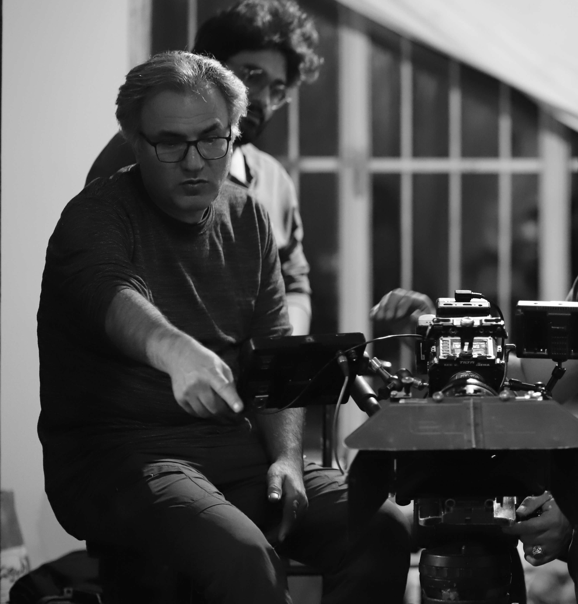
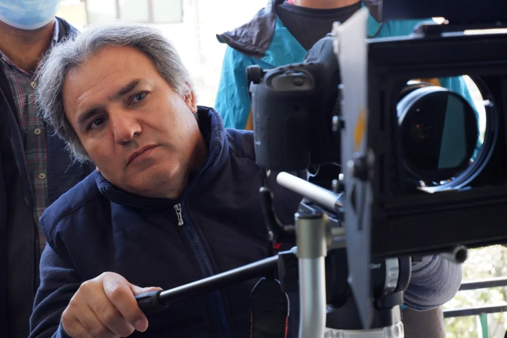
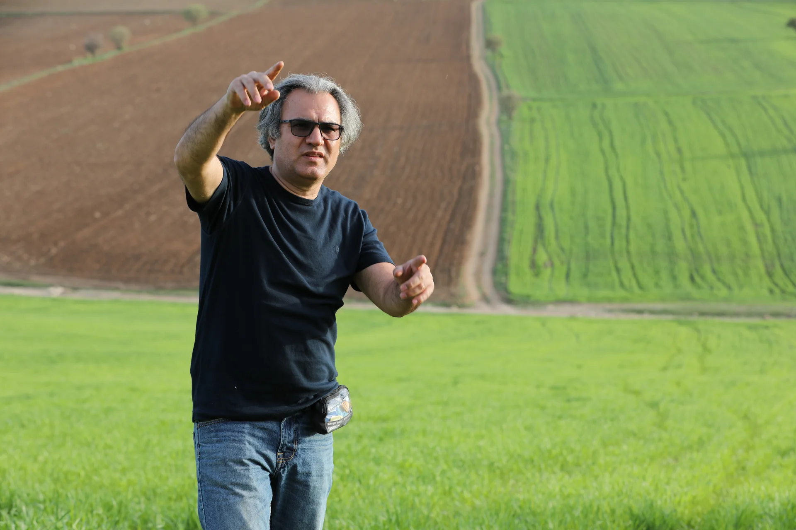
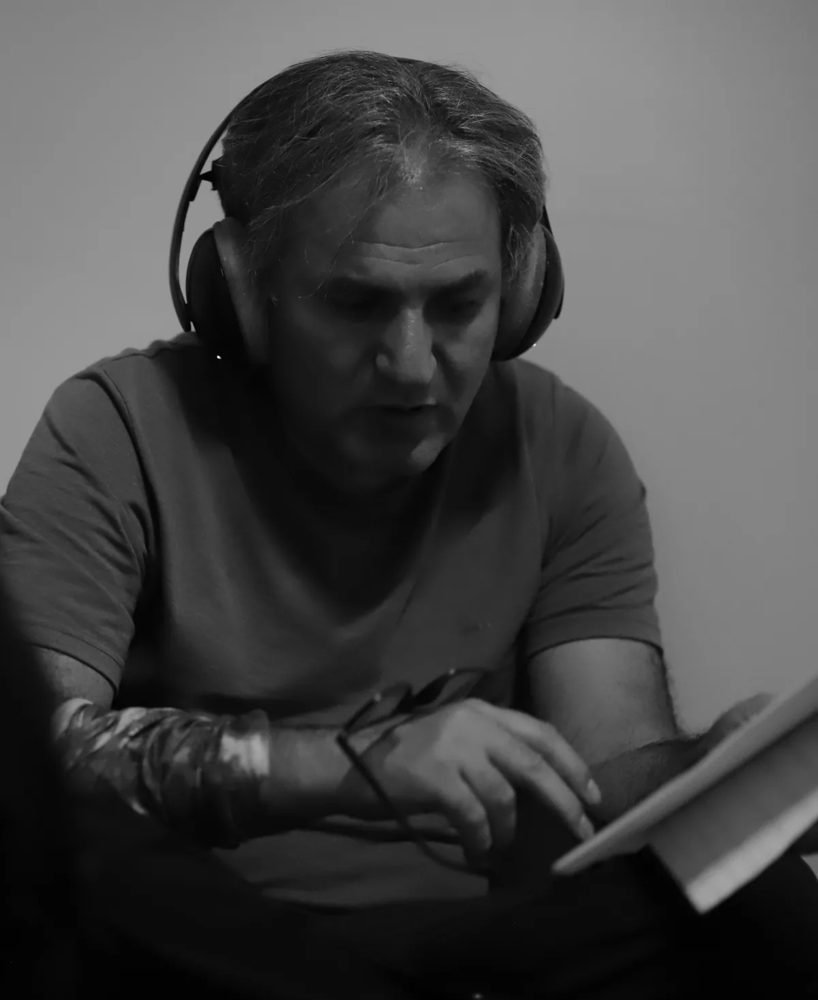
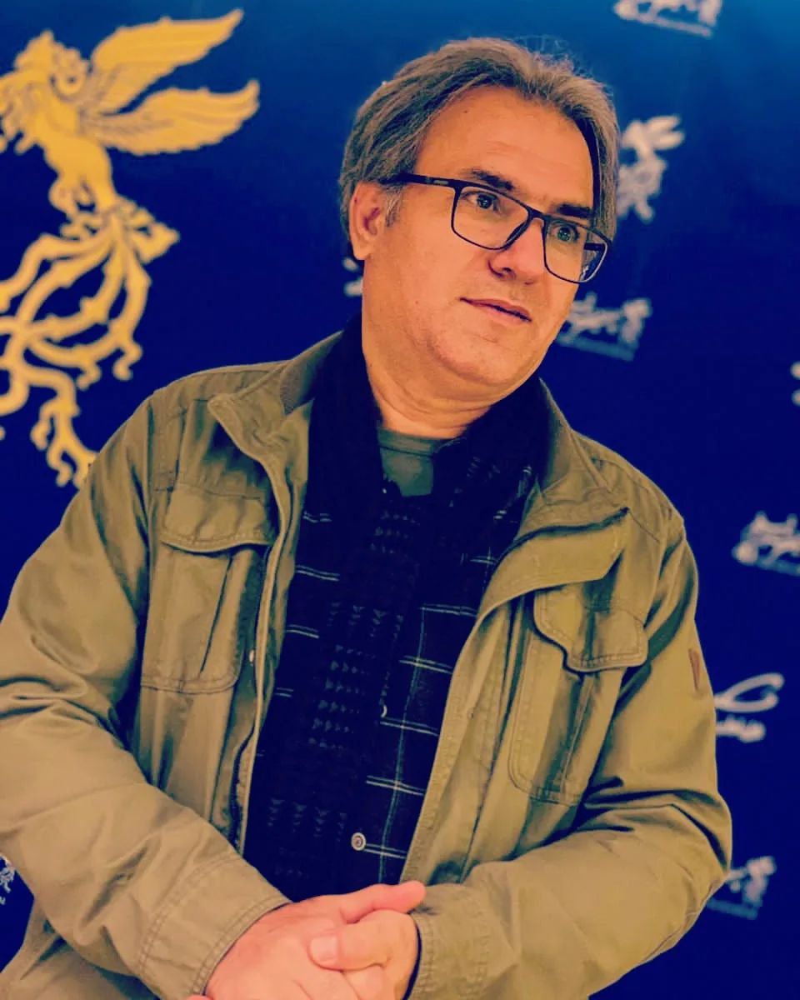

Foroud Paknia | کارگردان | نویسنده | مستندساز | پژوهشگر | مدرس سینما

فرود پاکنیا (Foroud Paknia) کارگردان، نویسنده، مستندساز، پژوهشگر و مدرس سینما است. فعالیت حرفهای او در حوزه سینمای داستانی و مستند بر روایتهایی متمرکز است که از پیوند تاریخ، فرهنگ و تجربه زیسته انسان شکل میگیرند. آثار او با رویکردی پژوهشمحور و توجه به هویت، حافظه جمعی و ظرفیتهای بیانی زبان سینما، در جستوجوی خلق روایتهایی اصیل، انسانی و ماندگار هستند.
او در طول سالهای فعالیت خود فیلمهای داستانی و مستند متعددی را کارگردانی و تولید کرده و همزمان در حوزه فیلمنامهنویسی و پژوهشهای سینمایی نیز حضوری مستمر داشته است. آثار او طیفی از موضوعات اجتماعی، تاریخی، فرهنگی و انسانی را دربر میگیرند و تلاش میکنند با نگاهی دقیق و واقعگرایانه، مخاطب را به تأمل و گفتوگو دعوت کنند.
فرود پاکنیا در کنار فعالیتهای حرفهای، در زمینه پژوهش و آموزش نیز فعال است. مطالعات او بر زبان سینما، روایت، مستندسازی، فناوریهای نوین و بهویژه هوش مصنوعی و تأثیر آن بر آینده صنعت سینما متمرکز است.
تصاویر و قابهایی از مسیر حرفهای




تولید و کارگردانی فیلمهای داستانی و مستند با تمرکز بر روایتهای انسانی، فرهنگی و تاریخی.
نگارش فیلمنامههای سینمایی در ژانرهای اجتماعی، تاریخی، فرهنگی و انسانی.
پژوهش در زمینه سینما، روایت، فرهنگ، مستندسازی و فناوریهای نوین.
آموزش و انتقال تجربه در حوزه سینما، فیلمسازی، روایت و فیلمنامهنویسی.
نگاه هنری فرود پاکنیا بر این باور استوار است که سینما تنها ابزاری برای روایت داستان نیست، بلکه رسانهای برای ثبت حافظه، بازنمایی فرهنگ و ایجاد گفتوگو میان انسانها و نسلهاست.
هر پروژه برای او تلاشی است برای یافتن روایتی صادقانه، تأثیرگذار و ماندگار؛ روایتی که بتواند میان گذشته، حال و آینده پیوند برقرار کند.